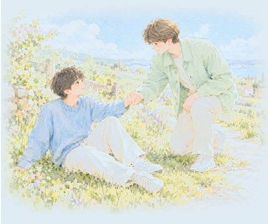
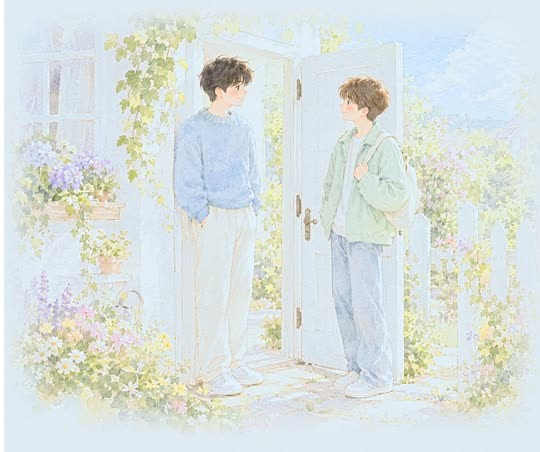

시애틀 시온장로교회는 시애틀에 있는 한인교회입니다.
주일 설교 ·
이웃에 대한 오해(3)—강도 만난 예수님
강도 만난 사람을 보고도 그냥 지나치지 못하는 마음은 어디서 오며, 그것이 왜 내 삶이 진짜라는 증거가 될까?
질문으로 만나는 설교
혼자 사는 열 명 중 다섯은 외로워요
그 마음, 당신만 그런 게 아니에요
이걸 ‘외로움과 건강’이라 해요
마음이 아프면 몸도 아파요

쓰러진 사람도 누군가의 이웃
외로운 당신도 이웃으로 보여요

그럼 누가 그 이웃이 되어줄까요?
답은 설교 속에 있어요
이 질문의 답은 설교에 있어요.
질문으로 만나는 설교
‘잘하고 있어’는 무슨 뜻일까요
그 말 뒤엔 불안한 마음이 있어요
‘잘하고 있어’
- 사실은 인정받고 싶다는 뜻
- 들킬까 봐 먼저 하는 말
- 사실 나도 자신없다는 뜻
심리학에선 이걸 ‘가면 증후군’이라 불러요
잘하면서도 들킬까 두려운 마음
증명하려 하지 않아도 괜찮아요
그냥 손을 내밀면 되는 거예요
그럼 진짜 괜찮아지는 법은?
나머지는 설교에 있어요
이 질문의 답은 설교에 있어요.
- 설교
- 이웃에 대한 오해(3)—강도 만난 예수님
- 본문
- 마태복 25:31-46
- 날짜
- 2026년 11월 1일 주일예배
- 설교자
- 이영래 목사 · 시애틀 시온장로교회
- 주제
- 변화 · 자기성장 · 마음 · 자기성찰 · 진짜나 · 관계 · 공감 · 시선
이 설교의 말씀 카드
휴대폰 배경화면으로 저장하고, 사랑하는 이들에게 나눠 주세요.
이번 주일, 함께 예배해요.주일예배 오전 10:45 · 본당 · 17920 Meridian Ave N, Shoreline, WA 98133
예배 안내